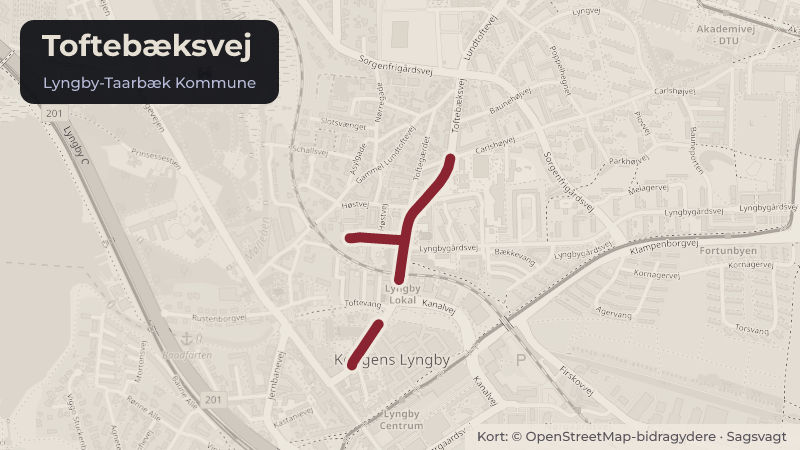

På dagsordenen 1. december, Teknik- og Miljøudvalget, Lyngby-Taarbæk
Intern overdragelse af areal til fortov

Kort fortalt
- Hvem
- Teknik- og Miljøudvalget, Lyngby-Taarbæk Kommune
- Hvornår
- Tirsdag 1. december 2026
- Status
- På dagsordenen. Sagen behandles på mødet.
- Næste skridt
- Hvis udvalget godkender en ændring af de matrikulære forhold, vil forvaltningen arbejde videre med dette.
Er noget forkert her? Skriv til os
Hvad kan du gøre?
- Skriv til politikerne
- Udvalgets møder er lukkede, men du kan skrive til medlemmerne før mødet tirsdag 1. december 2026. Du finder dem på ltk.dk.
Læs hele sagen Kommunens egen tekst
Indstilling
Forvaltningen foreslår, at udvalget godkender, at der sker en intern overdragelse af fortovet
mellem kommunens anlægsmyndighed og ejendomskontor, og at forvaltningen kan påbegynde
den matrikulære berigtigelse.
Problemstilling
Toftebæksvej er i kommunens vejregister udlagt som en 15 m bred vej ved Gasværksvej. Dette
omfatter fortovet langs ejendommen Toftebæksvej 8, matr.nr. 2ry Kgs. Lyngby By, Kgs.
Lyngby. Fortovet ved ejendommen driftes og vedligeholdes som offentligt fortov af kommunen,
men er matrikulært en del af Toftebæksvej 8. Arealet som sagen drejer sig er vist på bilag 1
og har en størrelse på ca. 80 kvm.
Toftebæksvej 8 ejes af kommunen, men indgår i kommunens projekt om udbud/salg af de
kommunalt ejede arealer i Gasværksvejskvarteret.
Løsninger
For at sikre klare ejendomsretlige og matrikulære forhold ved et eventuelt frasalg af
Toftebæksvej 8, bør skellet mod Toftebæksvej ændres, så fortovet ligger på vejmatriklen. Dette
kan ske ved en arealoverførsel, således at arealet overdrages til kommunens anlægsafdeling
(Center for Arealer og Ejendomme), som vejejer.
Strategisk ramme
En arealoverførsel og ændring af de matrikulære forhold betyder, at der ikke er tvivl om arealet
status som offentligt fortov, hvis Toftebæksvej 8 sælges.
Økonomi
En arealoverførsel skal udføres af en landinspektør og vil beløbe sig til ca. 30.000 kr.
Udgifter til landinspektøren afholdes indenfor rammen af Digitalisering, Infrastruktur og Anlæg
under aktivitetsområdet 'Vej og Park'
Der vil ikke være yderligere udgifter til driften, da driften af fortovet allerede udføres af
kommunens driftsafdeling.
Videre proces
Hvis udvalget godkender en ændring af de matrikulære forhold, vil forvaltningen arbejde videre
med dette.
Kilde: Lyngby-Taarbæk Kommune, Teknik- og Miljøudvalget, dagsorden fra mødet tirsdag 1. december 2026, punkt 13. Læs den originale sag hos kommunen.
Steder i sagen: Toftebæksvej